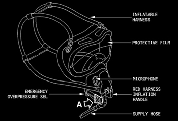

Emergency Oxygen Systems
Cockpit Oxygen System
OXYGEN FULL FACE MASK - The full face mask is a quick-donning high comfort face piece that shields the entire face from smoke and fumes. Each mask is equipped with a mask-mounted regulator and smoke visor (all have a microphone except the second observer position).
Cockpit oxygen is supplied from a single high pressure bottle that is reduced to a regulated low pressure. Oxygen bottle pressure is displayed on the ECAM DOOR/OXY page. Full bottle pressure is approximately 1850 PSI. The ECAM REGUL LO PR indication alerts pilots when oxygen pressure is low. A green over pressure blow out disk is located on the lower left side of the forward fuselage.
|  |
Limits
Cockpit Oxygen
Min Pressure - 850 PSI
Portable Oxygen Bottle
Min Pressure - 1600 PSI